Patient educationরোগীদের স্বাস্থ্যশিক্ষা
Health Awareness Photo Galleryস্বাস্থ্যসচেতনতা ফটো গ্যালারি
Select a poster to view its full-size original image. These are general education materials, not a substitute for individual medical advice.সম্পূর্ণ আকারে দেখতে পোস্টারে চাপ দিন। এগুলো সাধারণ স্বাস্থ্যশিক্ষার জন্য; ব্যক্তিগত চিকিৎসা পরামর্শের বিকল্প নয়।
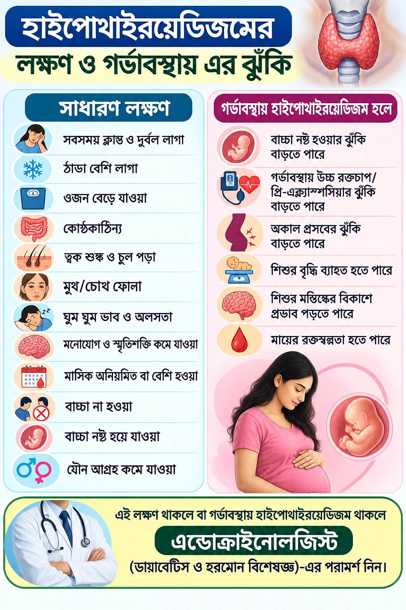
Hypothyroidism: symptoms and pregnancyহাইপোথাইরয়েডিজম: লক্ষণ ও গর্ভাবস্থা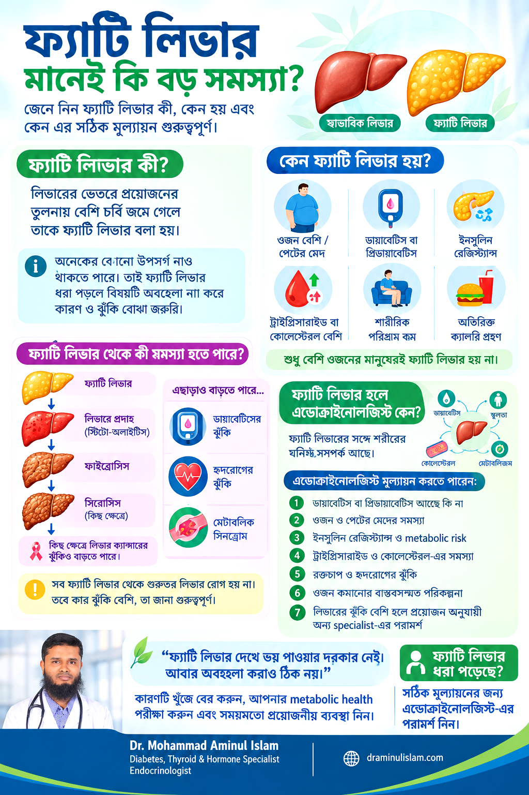
Fatty liver and metabolic healthফ্যাটি লিভার ও বিপাকীয় স্বাস্থ্য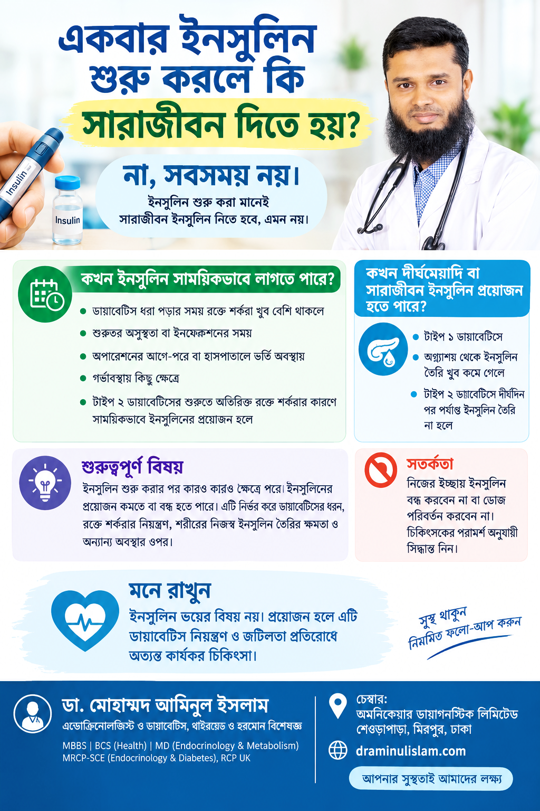
Can insulin be stopped after starting?ইনসুলিন শুরু করলে কি বন্ধ করা যায়?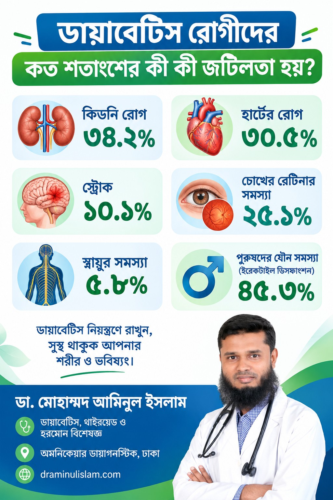
Complications of diabetesডায়াবেটিসের জটিলতা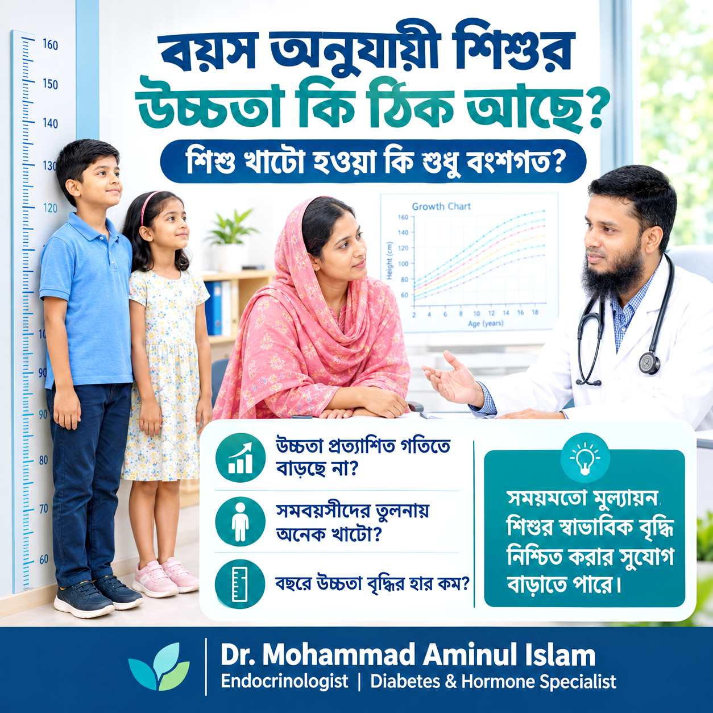
Growth assessment in childrenশিশুদের উচ্চতা ও বৃদ্ধি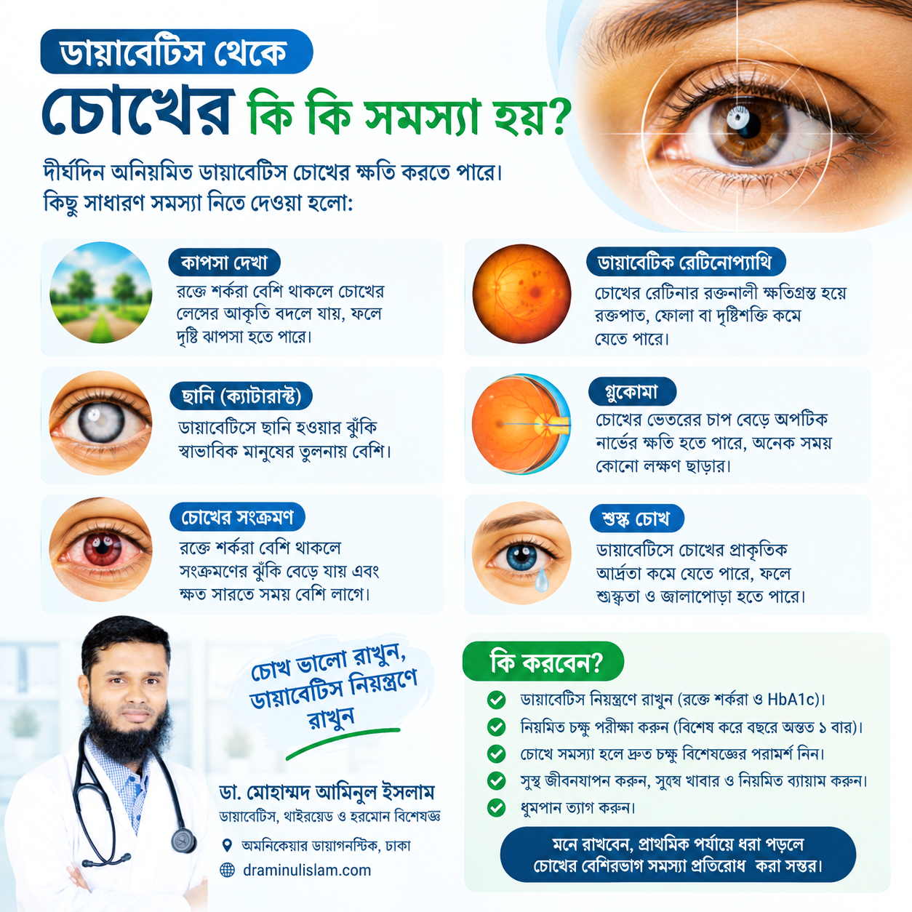
Diabetes and eye healthডায়াবেটিস ও চোখের স্বাস্থ্য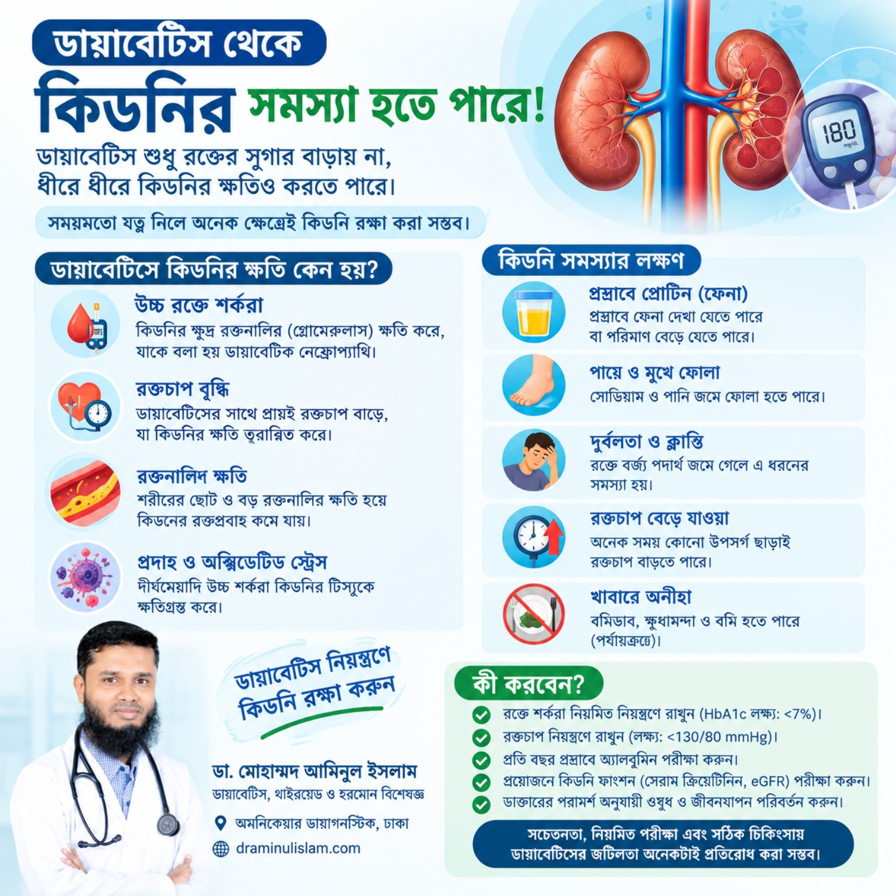
Diabetes and kidney healthডায়াবেটিস ও কিডনির স্বাস্থ্য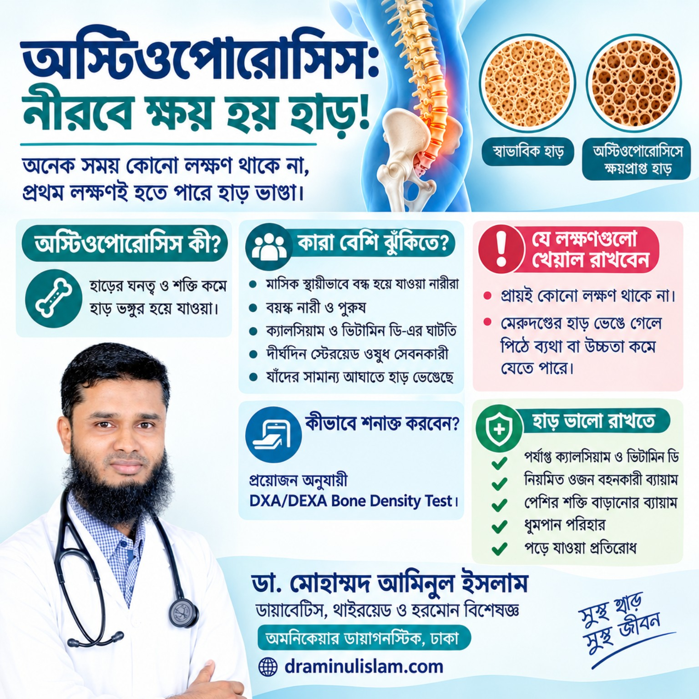
Osteoporosis and bone healthঅস্টিওপরোসিস ও হাড়ের স্বাস্থ্যWhen to screen for diabetesকখন ডায়াবেটিস পরীক্ষা করবেন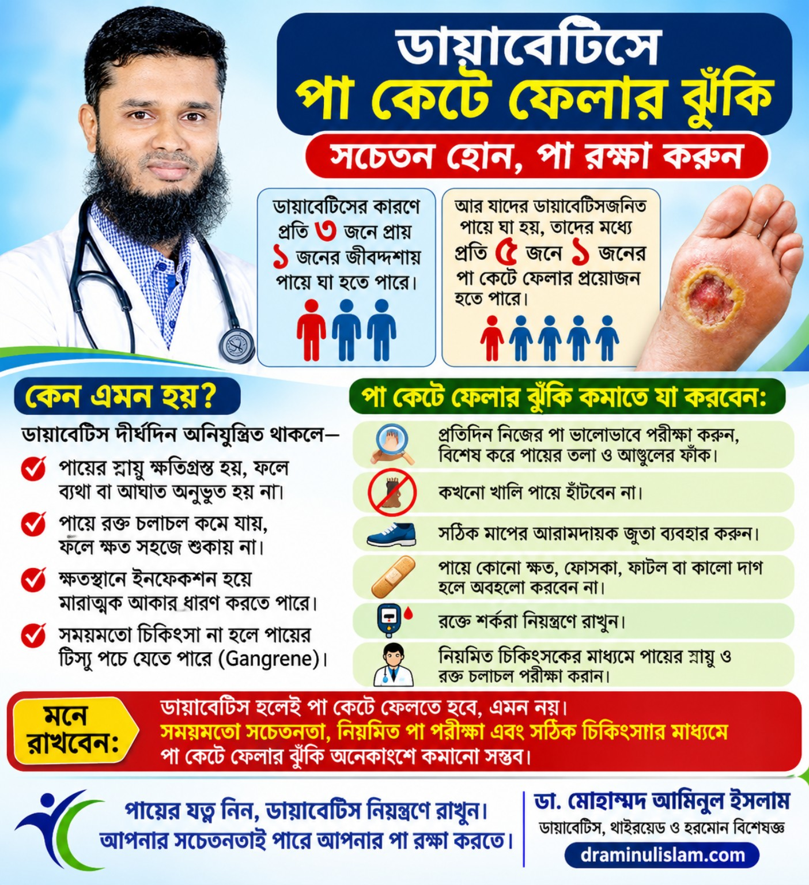
Diabetes and foot careডায়াবেটিস ও পায়ের যত্ন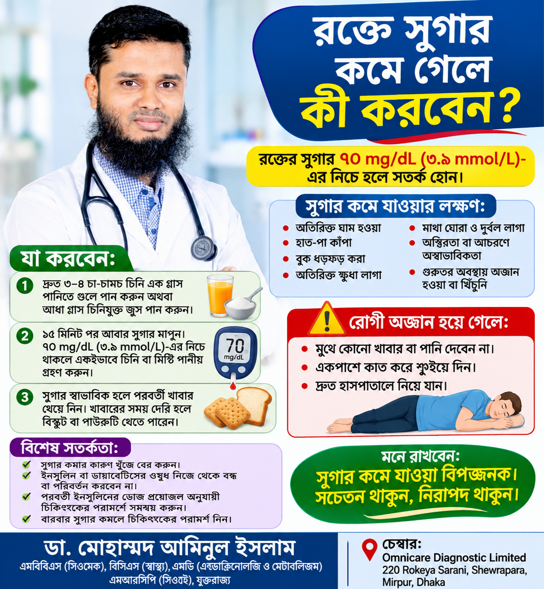
Low blood sugar: what to doরক্তে সুগার কমে গেলে করণীয়Small penis in children: hormonal evaluationশিশুর লিঙ্গ ছোট: হরমোন মূল্যায়ন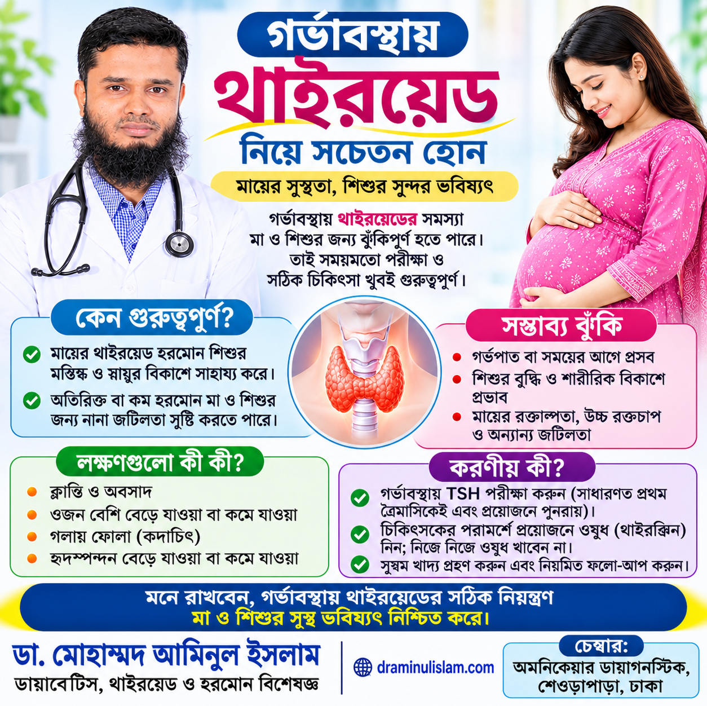
Thyroid health in pregnancyগর্ভাবস্থায় থাইরয়েডGestational diabetes awarenessগর্ভকালীন ডায়াবেটিসSome statistics and recommendations shown in older posters may depend on the study population or current guidelines. Please discuss individual decisions with your clinician.কিছু পোস্টারের পরিসংখ্যান নির্দিষ্ট গবেষণার জনগোষ্ঠীর ওপর নির্ভরশীল হতে পারে এবং চিকিৎসা নির্দেশনা সময়ের সঙ্গে পরিবর্তিত হতে পারে। ব্যক্তিগত সিদ্ধান্তে চিকিৎসকের পরামর্শ নিন।
← Back to home← মূল পাতায় ফিরুন